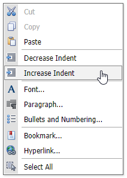

Using Indents
You can set or modify a first line indent, right indent, left indent and hanging indent of a paragraph by using the horizontal ruler, dialog box, Increase/Decrease Indent buttons or context menu.

Press TAB to create the first line indent on the keyboard. Each pressing the TAB key moves the first line indent to 0,5 inch.

Changing Indents by Using the Ruler
Rich Text Editor provides indent markers of the following types.

To set or modify indents by using the ruler, do the following:
Click anywhere in a paragraph that will be formatted or select one or more paragraphs.
Move an indent marker to a specific position on the ruler.

Changing Indents by Using the Dialog Box
To set or modify indents by using the dialog box, do the following:
Click anywhere within a paragraph that will be formatted or select one or more paragraphs.
Select the Page Layout tab, and click in the right bottom corner of the Paragraph group.

Specify indents settings within the invoked Paragraph dialog box and click OK.

Changing Indents by Using Increase/Decrease Indent Buttons
To set or modify indents by using the Increase/Decrease Indent buttons, do the following:
Click anywhere within a paragraph that will be formatted or select one or more paragraphs.
Select the Home tab, and click the Increase Indent
 or Decrease Indent
or Decrease Indent  button in the Paragraph group. Increase Indent and Decrease indent buttons increases and decreases the indent by increments of 0.5 inch respectively.
button in the Paragraph group. Increase Indent and Decrease indent buttons increases and decreases the indent by increments of 0.5 inch respectively.
Changing Indents by Using Context Menu
To set or modify indents by using the context menu, do the following:
Right-click anywhere within a paragraph that will be formatted or select one or more paragraphs.
In the invoked menu click the Increase Indent
or Decrease Indent command. Increase Indent and Decrease indent commands increase and decrease the indent by increments of 0.5 inch respectively.